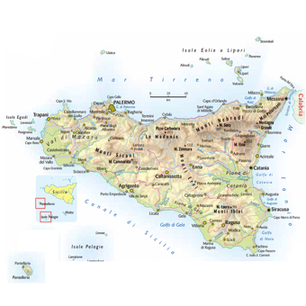

| Nome |
Sicilia |
| Capoluogo |
Città metropolitana di Palermo (PA) |
| Data di Istituzione |
15 Maggio 1946 |
| Altitudine media |
391 m.s.l.m |
| Superficie |
25832 km^2 |
| Abitanti (agosto 2023) |
4.784.621 |
| Densità |
185 ab/km^2 |
| Comuni |
391 |
| Province |
Agrigento (AG), Caltanissetta (CL), Enna (EN), Ragusa (RG), Siracusa (SR), Trapani (TP), Catania (CT), Messina (ME) |
| Confini |
Mar Mediterraneo |
| Patrono |
Vergine Maria Odigitria |
| PIL procapite (2017) |
17.400€ |
Posto da visitare assolutamente: Parco dell'Etna - Catania (CT)
Il Parco dell'Etna è un'area protetta situata nella parte orientale della Sicilia,
in Italia, e circonda l'Etna, uno dei vulcani più attivi al mondo.
Ecco alcuni dettagli sul Parco dell'Etna:
Ubicazione:
Il Parco dell'Etna si estende su una superficie di circa 59.000 ettari e comprende diverse città e villaggi che circondano il vulcano Etna. Il parco copre la parte orientale dell'isola della Sicilia, compreso il versante orientale e settentrionale dell'Etna.
Vulcano Etna:
L'Etna è uno dei vulcani più alti e attivi al mondo,
con un'altitudine di circa 3.329 metri.
È caratterizzato da una forma conica ma complessa e ha una storia
vulcanica che si estende su migliaia di anni.
L'Etna è un sito UNESCO dal 2013.
Risorse naturali:
Il parco ospita una ricca varietà di flora e fauna.
Tra le specie vegetali, è possibile trovare boschi di conifere,
foreste di querce, piante endemiche e molte altre.
La fauna include diverse specie di uccelli, mammiferi e insetti
adattati a un ambiente vulcanico.
Attività vulcaniche:
L'Etna è attivo, e le sue eruzioni sono eventi relativamente frequenti.
Le attività vulcaniche, tra cui eruzioni effusive e esplosive,
sono monitorate da esperti e sono un'attrazione unica per gli scienziati,
i vulcanologi e i visitatori interessati alla geologia.
Escursioni e attività ricreative:
Il Parco dell'Etna offre numerose opportunità per l'escursionismo,
con una rete di sentieri che permette ai visitatori di esplorare le
diverse facce del vulcano.
Ci sono anche tour organizzati che portano i visitatori alle zone più
alte dell'Etna. Inoltre, è possibile praticare attività come lo sci
durante l'inverno.
Centri visitatori:
Ci sono diversi centri visitatori nel Parco dell'Etna che forniscono
informazioni sulla geologia del vulcano,
la sua storia e la flora e fauna circostanti.
Questi centri sono punti di partenza ideali per chi desidera esplorare il parco.
Patrimonio culturale:
Oltre alla sua importanza naturalistica, il Parco dell'Etna conserva
anche un ricco patrimonio culturale, con siti archeologici,
antiche chiese e altri luoghi che testimoniano la presenza umana
nella regione nel corso dei secoli.
Il Parco dell'Etna è quindi una destinazione unica che offre un mix di
bellezze naturali, attività avventurose,
e la possibilità di esplorare la geologia e la storia di uno dei vulcani
più affascinanti del mondo.